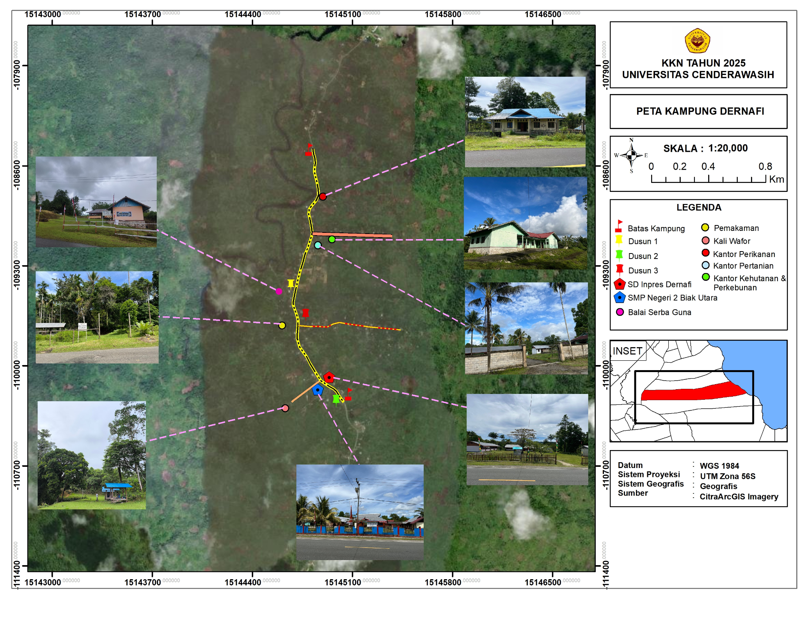
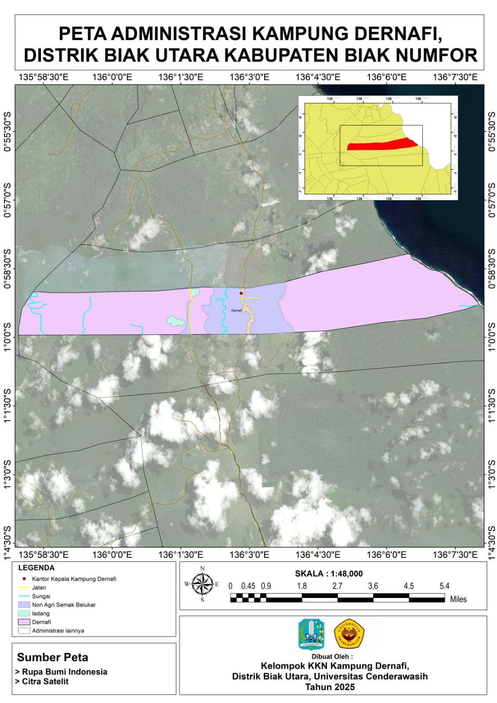

1. Peta Kampung Dernafi
Peta wilayah Kampung Dernafi dibuat dengan skala detail untuk menampilkan pembagian dusun dan fasilitas umum yang ada di kampung. Terdapat tiga dusun utama, masing-masing diberi warna berbeda, yaitu Dusun 1, Dusun 2, dan Dusun 3. Jalan utama kampung menjadi jalur penghubung antardusun sekaligus akses menuju fasilitas penting, seperti Sekolah Dasar Inpres Dernafi, SMP Negeri 2 Biak Utara, Balai Serba Guna, serta kantor pemerintahan bidang perikanan, pertanian, kehutanan, dan perkebunan. Peta ini juga menunjukkan lokasi pemakaman dan Kali Wafor sebagai bagian penting dari lingkungan kampung. Foto-foto di sekitar peta memperkuat gambaran nyata kondisi fisik Kampung Dernafi, mulai dari sekolah, balai serbaguna, hingga kantor pemerintahan. Secara keseluruhan, peta ini lebih menekankan tata ruang internal kampung sehingga dapat membantu masyarakat maupun pihak luar untuk lebih mudah mengenal kondisi sosial dan fasilitas yang ada di Kampung Dernafi.
2. Peta Administrasi Kampung Dernafi, Distrik Biak Utara, Kabupaten Biak Numfor
Peta ini menampilkan batas wilayah administratif Kampung Dernafi yang terletak di Distrik Biak Utara. Wilayah kampung membentang memanjang dari barat ke timur, dengan sisi timur laut langsung berbatasan dengan Laut Pasifik. Pada peta juga terlihat jalan utama yang menjadi jalur transportasi, aliran sungai yang melewati kampung, serta lahan pertanian dan semak belukar yang menunjukkan bagaimana masyarakat memanfaatkan ruang yang ada. Di bagian tengah wilayah, Kantor Kepala Kampung Dernafi ditandai dengan simbol khusus sebagai pusat pemerintahan kampung. Secara keseluruhan, peta ini memberikan gambaran jelas tentang batas administrasi sekaligus kondisi dasar wilayah, sehingga memudahkan pembaca memahami posisi strategis Kampung Dernafi baik dari sisi darat maupun laut.